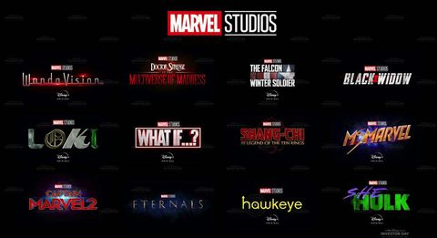
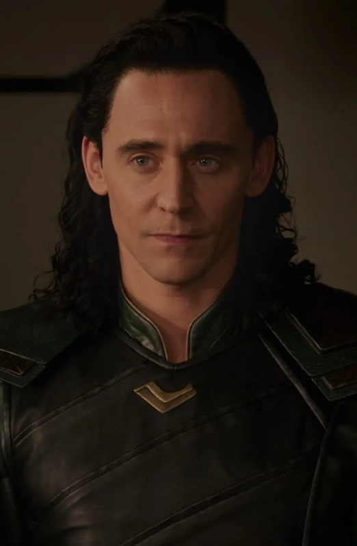
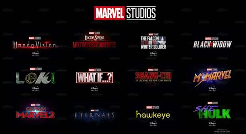
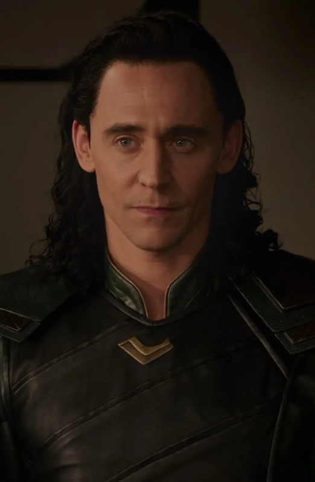

¿ES EL FINAL DE TODO?
Esta entrega de Spider-Man pone fin a la anterior y, por lo tanto, da comienzo a lo que conocemos como la Fase Cuatro del UCM.
Este es el momento en el que nos encontramos ahora mismo, cuando este artículo está siendo escrito. Un momento en el que decimos adiós a la Saga del Infinito y en el que, probablemente,
se avecinen grandes cambios en el Universo Cinematográfico de Marvel. En esta fase, Las peliculas se tornan un poco espeluznantes, ya que nos presentan temas que nunca habiamos visto
como el multiverso y lo peligroso que es el mismo, a lo largo de las peliculas que nos han enseñado se nota un poco la incertidumbre de los personajes frente al posible futuro que les espera
Algunas grabaciones y estrenos se vieron afectados por la situacion sanitaria de COVID-19 alrededor del mundo, Los proyectos se reanudaron en 2021 pero aun no hay certeza de algunas fechas.
Las proxima pelicula que saldra en cartelera es DOCTOR STRANGE: multiverse of madness (MAYO 5), muchos fans estamos a la espera impaciente de que salga la pelicula ya que segun rumores esta pelicula,
va a cambiar totalmente al UCM como lo conocemos.
Peliculas y TV shows Disponibles en DISNEY+:
| PELICULA |
TRAILER |
FECHA |
| BlackWidow |
Nat |
2021 |
| Shang-Chi y la Leyenda de los diez anillos |
Shaun |
2021 |
| Eternals |
Celestials |
2021 |
| Spider-Man: No way home |
NED y MJ |
2021 |
| TV show: WandaVision |
Tommy billy |
2021 |
| TV show: Falcon and the winter soilder |
Sam |
2021 |
| TV show: LOKI |
VaRiAnTeS |
2021 |
| TV show: What if...? |
QUE... |
2021 |
| TV show: Moon Knight |
En curso |
2022 |
PROXIMOS PROYECTOS:
| PELICULA |
TRAILER |
FECHA |
| DR. STRANGE: MULTIVERSE OF MADNESS |
MuLtIvErsEE |
MAY 2022 |
| THOR: Love and Thunder |
NO OFICIAL |
2022-2023 |
| Ms. Marvel |
Tv show |
JUNE 2022 |
Aqui podras encontrar una informacion mas detallada acerca de toda la linea del tiempo del UCM:
EXPLICACION
 



 Regresar
Regresar